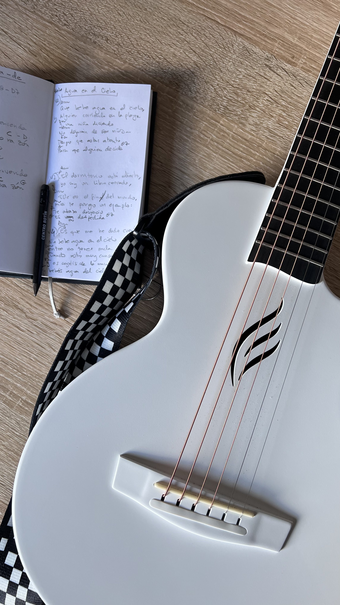

Método de composición musical
Componer con los materiales que el cerebro genera al borde del sueño. Fragmentos capturados en la transición entre vigilia y sueño, transformados en canciones.
↓El método
En la transición entre la vigilia y el sueño, el cerebro genera contenido espontáneo: frases, imágenes, neologismos, melodías. La neurociencia los llama estados hipnagógicos. Ocurren en la fase N1 del sueño NREM — una ventana temporal breve donde la actividad asociativa se dispara y la inhibición prefrontal se relaja.
Bricolaje Sonoro™ es un método que captura ese material y lo transforma en canciones a través de un proceso sistemático de seis pasos. El término viene de Lévi-Strauss: el bricoleur trabaja con los materiales que tiene a mano. En este caso, los materiales son fragmentos generados por el cerebro al borde del sueño.
El método no propone un mecanismo nuevo. Lo que propone es una sistematización del proceso creativo liminal: convertir lo que históricamente se ha tratado como inspiración aleatoria — la «musa» — en un protocolo de ingeniería cognitiva replicable y auditable.
Base científica
Bricolaje Sonoro se apoya en evidencia publicada en revistas científicas indexadas. La fase N1 del sueño es un estado neurocognitivo estudiado, no un territorio místico. El método utiliza mecanismos documentados — no los extrapola.
Science Advances, 2021
Pasar al menos 15 segundos en N1 triplica la probabilidad de insight creativo. El efecto desaparece en sueño más profundo.
Consciousness and Cognition, 2020
El dispositivo Dormio (MIT Media Lab) demuestra que N1 es permeable a inputs verbales previos y que el contenido es reportable al despertar.
Neuroscience of Consciousness, 2017
Los microsueños generan contenido sensorial original — incluido contenido auditivo y melódico — no disponible en vigilia.
Journal of Abnormal Psychology, 1974
El rasgo de absorción (Tellegen) correlaciona con experiencias hipnagógicas más frecuentes y elaboradas. Es predisponente, no requisito.
Prueba de concepto

El protocolo ha generado un corpus de más de 1.900 registros hipnagógicos a lo largo de más de un año. De ese material han salido cuatro canciones compuestas con material liminal — dos de ellas construidas al 100% con material onírico: toda la letra, la melodía y el bridge capturados en estados hipnagógicos e hipnopómpicos. Las otras dos incorporan material liminal sustancial en letra y música.
Las canciones se publican bajo el nombre artístico Hedera™ — un proyecto de cantautor donde el método se convierte en música real. Guitarra española, voz, y nada más. Sin metrónomo. Con rubato expresivo.
Escuchar las canciones en hederamusica.es →«Convertir lo que históricamente se ha tratado como inspiración aleatoria en un protocolo de ingeniería cognitiva replicable y auditable.»